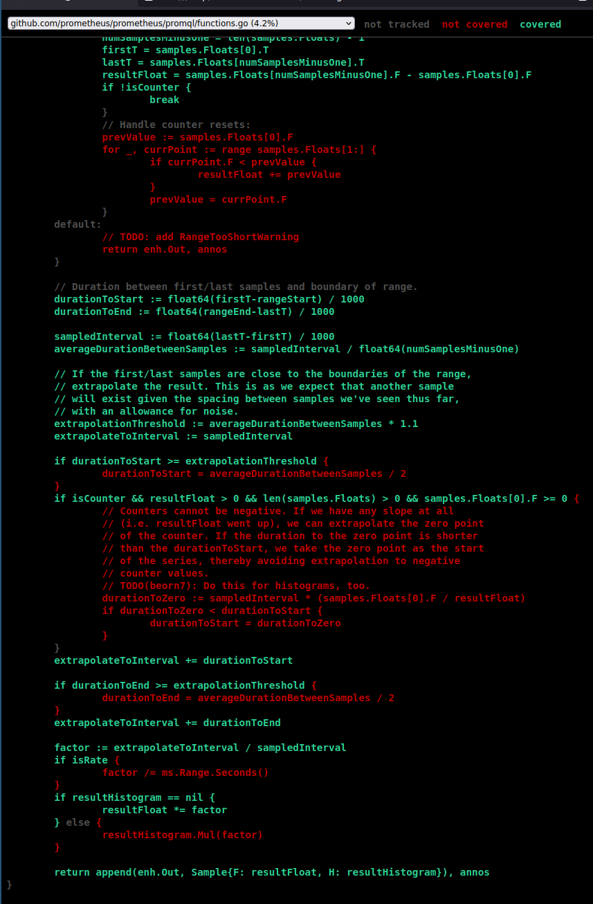
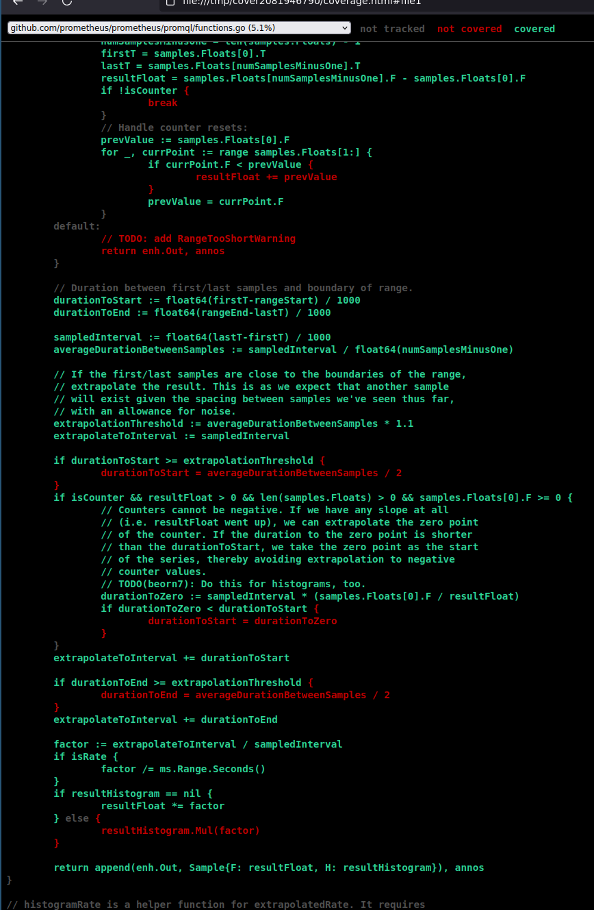

Bài trước đã dùng mắt để chạy code funcDelta và funcRate của Prometheus để xem code chạy qua những dòng nào, những phép tính nào được tính trong extrapolatedRate.
Bài này sẽ sử dụng go test coverage để xem code nào được chạy.
Viết test Prometheus
Code của funcDelta và funcRate đều nằm trong file promql/functions.go, theo quy ước chung của Go, test sẽ nằm trong promql/functions_test.go, nhưng file này chỉ chứa có 2 test:
$ grep ^func -c functions*_test.go
functions_internal_test.go:1
functions_test.go:2
Lý do là PromQL tự tạo ra 1 kiểu/ngôn ngữ test riêng cho ngôn ngữ PromQL, nằm trong thư mục promqltest/ chứ không phải Golang test thông thường. file promqltest/README.md viết:
The PromQL test scripting language
This package contains two things:
- an implementation of a test scripting language for PromQL engines
- a predefined set of tests written in that scripting language
$ find promql/promqltest
promql/promqltest
promql/promqltest/README.md
promql/promqltest/testdata
promql/promqltest/testdata/aggregators.test
promql/promqltest/testdata/at_modifier.test
promql/promqltest/testdata/collision.test
promql/promqltest/testdata/literals.test
promql/promqltest/testdata/selectors.test
promql/promqltest/testdata/staleness.test
promql/promqltest/testdata/trig_functions.test
promql/promqltest/testdata/range_queries.test
promql/promqltest/testdata/functions.test
promql/promqltest/testdata/native_histograms.test
promql/promqltest/testdata/operators.test
promql/promqltest/testdata/limit.test
promql/promqltest/testdata/histograms.test
promql/promqltest/testdata/subquery.test
promql/promqltest/test.go
promql/promqltest/test_test.go
may thay, trong functions_test vẫn có 1 function, và 1 là đủ để làm ví dụ rồi:
func TestDeriv(t *testing.T) {
// https://github.com/prometheus/prometheus/issues/2674#issuecomment-315439393
// This requires more precision than the usual test system offers,
// so we test it by hand.
Copy function này, tạo function để test funcDelta:
func TestDelta(t *testing.T) {
storage := teststorage.New(t)
defer storage.Close()
opts := promql.EngineOpts{
Logger: nil,
Reg: nil,
MaxSamples: 10000,
Timeout: 10 * time.Second,
}
engine := promql.NewEngine(opts)
a := storage.Appender(context.Background())
metric := labels.FromStrings("__name__", "foo")
a.Append(0, metric, 1726745659174, 120)
a.Append(0, metric, 1726745674174, 122)
a.Append(0, metric, 1726745689174, 134)
a.Append(0, metric, 1726745704174, 149)
require.NoError(t, a.Commit())
ctx := context.Background()
query, err := engine.NewInstantQuery(ctx, storage, nil, "delta(foo[1m])", timestamp.Time(1726745705174))
require.NoError(t, err)
result := query.Exec(ctx)
require.NoError(t, result.Err)
vec, _ := result.Vector()
require.Len(t, vec, 1, "Expected 1 result, got %d", len(vec))
require.Equal(t, 0.0, vec[0].F, "Expected 0.0 as value, got %f", vec[0].F)
}
Chạy test tạo coverprofile
$ go test -run TestDelta -coverprofile=coverage.delta
--- FAIL: TestDelta (0.01s)
functions_test.go:61:
Error Trace: ~/prometheus/promql/functions_test.go:61
Error: Not equal:
expected: 0
actual : 38.666666666666664
Test: TestDelta
Messages: Expected 0.0 as value, got 38.666667
FAIL
coverage: 14.5% of statements
exit status 1
FAIL github.com/prometheus/prometheus/promql 0.023s
$ go tool cover -html=coverage.delta
File này chỉ là 1 file text với nội dung
mode: set
github.com/prometheus/prometheus/promql/engine.go:86.41,88.2 1 0
github.com/prometheus/prometheus/promql/engine.go:102.41,104.2 1 0
github.com/prometheus/prometheus/promql/engine.go:106.42,108.2 1 0
github.com/prometheus/prometheus/promql/engine.go:110.43,112.2 1 0
...
github.com/prometheus/prometheus/promql/functions.go:61.116,65.2 1 0
github.com/prometheus/prometheus/promql/functions.go:71.148,89.60 5 1
github.com/prometheus/prometheus/promql/functions.go:89.60,91.3 1 0
...
mở trình duyệt với hình: 
Tương tự để test rate:
func TestRate(t *testing.T) {
storage := teststorage.New(t)
defer storage.Close()
opts := promql.EngineOpts{
Logger: nil,
Reg: nil,
MaxSamples: 10000,
Timeout: 10 * time.Second,
}
engine := promql.NewEngine(opts)
a := storage.Appender(context.Background())
metric := labels.FromStrings("__name__", "foo")
a.Append(0, metric, 1726745659174, 120)
a.Append(0, metric, 1726745674174, 122)
a.Append(0, metric, 1726745689174, 134)
a.Append(0, metric, 1726745704174, 149)
require.NoError(t, a.Commit())
ctx := context.Background()
query, err := engine.NewInstantQuery(ctx, storage, nil, "rate(foo[1m])", timestamp.Time(1726745705174))
require.NoError(t, err)
result := query.Exec(ctx)
require.NoError(t, result.Err)
vec, _ := result.Vector()
require.Len(t, vec, 1, "Expected 1 result, got %d", len(vec))
require.Equal(t, 0.0, vec[0].F, "Expected 0.0 as value, got %f", vec[0].F)
}
Chạy
$ go test -run TestRate -coverprofile=coverage.rate
--- FAIL: TestRate (0.01s)
functions_test.go:61:
Error Trace: /home/hvn/code/prometheus/promql/functions_test.go:61
Error: Not equal:
expected: 0
actual : 0.6444444444444444
Test: TestRate
Messages: Expected 0.0 as value, got 0.644444
FAIL
coverage: 14.9% of statements
exit status 1
FAIL github.com/prometheus/prometheus/promql 0.021s
$ go tool cover -html=coverage.rate

Kết luận
Prometheus function không tính sai, nó chỉ tính đúng như trong tài liệu mô tả. Hãy đọc tài liệu. Hoặc đọc code.
Hết.
HVN at http://pymi.vn and https://www.familug.org.
Ủng hộ đồng bào bị ảnh hưởng bởi cơn bão số 3.
Báo Tuổi Trẻ, Ngân hàng Công thương chi nhánh 3, TP.HCM. Số tài khoản: 113000006100 (Việt Nam đồng). Nội dung: Ủng hộ đồng bào bị ảnh hưởng bởi cơn bão số 3.